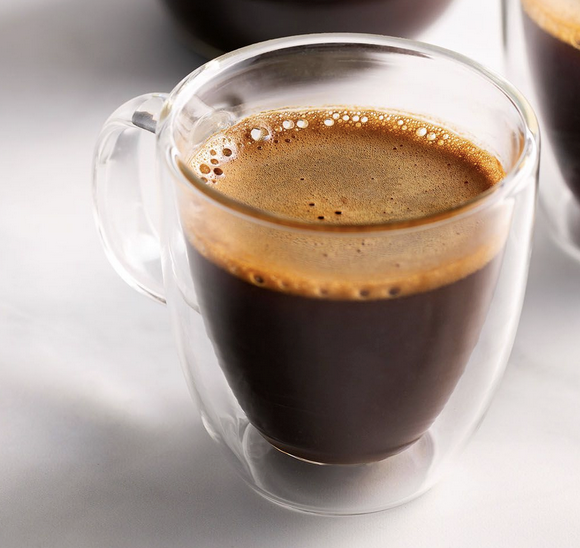
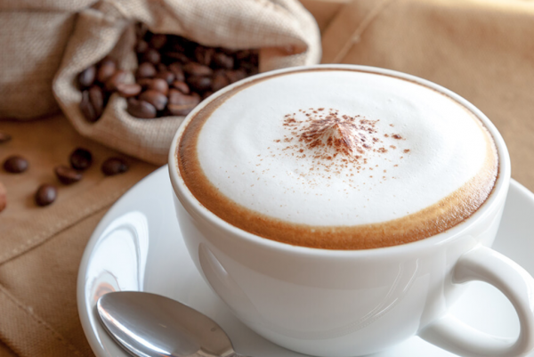

Different Types of Coffee
Here, we explore some of the most popular types of coffee you can enjoy at coffee trucks across our Dublin.
1. Espresso
Espresso is a strong coffee brewed by forcing hot water through finely-ground coffee beans. The name comes from the Italian word for "pressed out". It's the base for almost all coffee drinks.
2. Americano
An Americano consists of espresso diluted with hot water, reducing the intensity of the coffee's taste without mixing in other additives.
3. Cappuccino
Cappuccino consists of a third of espresso, a third of steamed milk, and a third of foamed milk, resulting in a rich, creamy texture. Many people and coffee shops add powdered chocolate on top to provide some additonal sweetness.
4. Latte Macchiato
A Latte Macchiato is made with a shot of espresso and steamed milk, topped with a small amount of foamed milk. It's smooth and milky, perfect for those who prefer a milder coffee.

6. Mocha
A Mocha combines espresso with steamed milk and chocolate syrup, often topped with whipped cream. A mocha is a favourite for chocolate lovers!
7. Flat White
A Flat White is made by pouring equal parts steamed milk and espresso, giving it a strong coffee flavor while maintaining a creamy texture.
8. Irish Coffee
A bit of a wildcard, Irish Coffee features whiskey mixed with espresso and sugar, and topped with cream instead of milk. Definitely not the drink to start your day with, but one that offers a very unique taste.